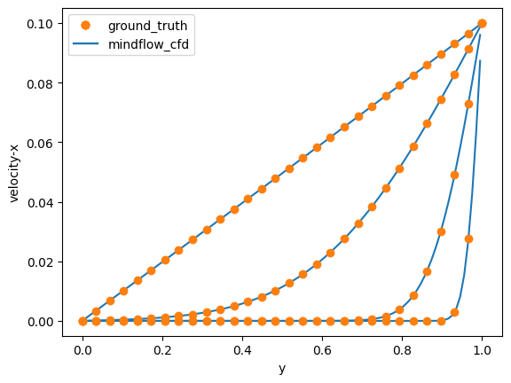

二维库埃特流


本案例要求MindSpore版本 >= 2.0.0调用如下接口: mindspore.jit，mindspore.jit_class。
在流体力学中，库埃特流是粘性流体在两个相对运动的表面之间的流动，表面的相对运动对流体施加剪应力并引起流动，在流动方向上也可以施加压力梯度。
库埃特流动在某些实际问题中也有应用，如地球的地幔和大气运动，以及轻负荷滑动轴承中的流动。库埃特流也可应用于粘度测定，证明可逆性等。
库埃特流以19世纪末法国昂热大学物理学教授莫里斯·库埃特的名字命名的。
问题描述
二维库埃特流动的定义为:
\[\frac{\partial u}{\partial t} = \frac{\partial^2 u}{\partial y^2}\]
模拟的初始条件为
\[u(y, 0), \quad 0<y<h\]
边界条件:
\[u(0, t)=0, \quad u(h, t)=U, \quad t>0\]
本案例中src包可以在src下载。
[1]:
import numpy as np
import matplotlib.pyplot as plt
from matplotlib.legend_handler import HandlerTuple
import mindspore as ms
from mindflow import load_yaml_config
from mindflow import cfd
from mindflow.cfd.runtime import RunTime
from mindflow.cfd.simulator import Simulator
from src.ic import couette_ic_2d
ms.set_context(device_target="GPU", device_id=3)
定义Simulator和RunTime
网格、材料、仿真时间、边界条件和数值方法的设置在文件couette.yaml中。
[2]:
config = load_yaml_config('couette.yaml')
simulator = Simulator(config)
runtime = RunTime(config['runtime'], simulator.mesh_info, simulator.material)
理论解
通过抽取稳态解，使问题趋于齐次，应用分离变量法可以求得理论解：
\[u(y,t)=U\frac{y}{h}-\frac{2U}{\pi}\sum_{i=1}^{\infty}{\frac{1}{n}e^{-n^2\pi^2\frac{\nu t}{h^2}}sin \left[ n\pi (1-\frac{y}{h}) \right] }\]
[3]:
def label_fun(y, t):
nu = 0.1
h = 1.0
u_max = 0.1
coe = 0.0
for i in range(1, 100):
coe += np.sin(i*np.pi*(1 - y/h))*np.exp(-(i**2)*(np.pi**2)*nu*t/(h**2))/i
return u_max*y/h - (2*u_max / np.pi)*coe
初始条件
根据网格坐标确定初始条件。
[4]:
mesh_x, mesh_y, _ = simulator.mesh_info.mesh_xyz()
pri_var = couette_ic_2d(mesh_x, mesh_y)
con_var = cfd.cal_con_var(pri_var, simulator.material)
执行仿真
执行仿真，并在 \(t=0.005s, t=0.5s, t=0.05s, t=0.005s\) 时与理论解相比较。
[5]:
dy = 1/config['mesh']['ny']
cell_centers = np.linspace(dy/2, 1 - dy/2, config['mesh']['ny'])
label_y = np.linspace(0, 1, 30, endpoint=True)
label_plot_list = []
simulation_plot_list = []
plot_step = 3
fig, ax = plt.subplots()
while runtime.time_loop(pri_var):
runtime.compute_timestep(pri_var)
con_var = simulator.integration_step(con_var, runtime.timestep)
pri_var = cfd.cal_pri_var(con_var, simulator.material)
runtime.advance()
if np.abs(runtime.current_time.asnumpy() - 5.0*0.1**plot_step) < 0.1*runtime.timestep:
label_u = label_fun(label_y, runtime.current_time.asnumpy())
simulation_plot_list.append(plt.plot(cell_centers, pri_var.asnumpy()[1, 0, :, 0], color='tab:blue')[0])
label_plot_list.append(plt.plot(label_y, label_u, label='ground_truth', marker='o', linewidth=0, color='tab:orange')[0])
plot_step -= 1
plt.legend(loc='best')
ax.legend([tuple(label_plot_list), tuple(simulation_plot_list)], ['ground_truth', 'mindflow_cfd'], numpoints=1, handler_map={tuple: HandlerTuple(ndivide=1)})
plt.xlabel('y')
plt.ylabel('velocity-x')
plt.savefig('couette.jpg')
current time = 0.000000, time step = 0.000200
current time = 0.000200, time step = 0.000200
current time = 0.000400, time step = 0.000200
current time = 0.000600, time step = 0.000200
current time = 0.000800, time step = 0.000200
current time = 0.001000, time step = 0.000200
current time = 0.001200, time step = 0.000200
current time = 0.001400, time step = 0.000200
current time = 0.001600, time step = 0.000200
current time = 0.001800, time step = 0.000200
current time = 0.002000, time step = 0.000200
current time = 0.002200, time step = 0.000200
current time = 0.002400, time step = 0.000200
current time = 0.002600, time step = 0.000200
current time = 0.002800, time step = 0.000200
current time = 0.003000, time step = 0.000200
current time = 0.003200, time step = 0.000200
current time = 0.003400, time step = 0.000200
current time = 0.003600, time step = 0.000200
current time = 0.003800, time step = 0.000200
current time = 0.004000, time step = 0.000200
current time = 0.004200, time step = 0.000200
current time = 0.004400, time step = 0.000200
current time = 0.004600, time step = 0.000200
current time = 0.004800, time step = 0.000200
current time = 0.005000, time step = 0.000200
current time = 0.005200, time step = 0.000200
current time = 0.005400, time step = 0.000200
current time = 0.005600, time step = 0.000200
current time = 0.005800, time step = 0.000200
current time = 0.006000, time step = 0.000200
...
current time = 4.999212, time step = 0.000200
current time = 4.999412, time step = 0.000200
current time = 4.999612, time step = 0.000200
current time = 4.999812, time step = 0.000200
